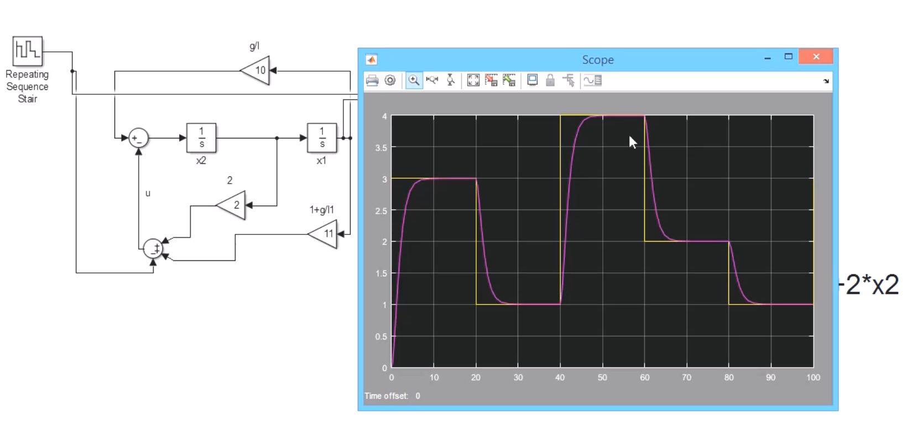

看线性控制器设计_Linear Controller Design及后续章节的笔记
对于开环系统X˙=AX，矩阵A 的特征值决定了系统的稳定性；当我们引入输入U，而U 又是X 的函数时，就变成了闭环控制系统X˙=AX+BU。讨论一个基本情况U=−KX，则X˙=AX−BKX=(A−BK)X，我们把A−BK 称为闭环的状态空间矩阵Acl，通过选取不同的K 就可以使得Acl 的特征值在所需范围之内。
一般过程
以下面系统为例，其状态空间方程为：
X˙=[0023]X+[01]U
这里要求是要使系统稳定在某一点，并不需要跟随输入。
首先分析A 矩阵的特征值为λ1=0,λ2=3，系统不稳定。
然后我们设计U=−KX=[−k1−k2]X，得到Acl=[0−k123−k2]
然后我们希望闭环系统的特征值λ1=λ2=−1，求得k1=0.5,k2=5
最后还能求得输入U=[−21−5][x1x2]
如何选取λ
- λ 有虚部会引入震荡
- λ 实部的绝对值决定收敛速度
- 还要考虑实际中U 给定的范围
- 最优化控制：有损失函数J=∫0∞(XTQX+UTRU)dt，根据需要设计不同的Q,R 矩阵，使得J=Jmin
系统会稳定在哪一点：令X˙=0 即可得系统的稳定点。
LQR 控制器
Linear Quadratic Regulater 是通过引入一个损失函数来确定Acl 的特征值的：
J=∫0∞(XTQX+UTRU)dt(1)
假设Q,R 都是对角矩阵，我们可以这样理解损失函数：
- XTQX=q1x12+q2x22+...+qnxn2，表示一种
penalty 惩罚的概念，可以看作对误差的反应
- UTRU 表示输入对系统的影响
这里我们可以使用matlab 的lqr(sys,Q,R) 来求解特征值。需要注意的是矩阵Q,R 所对应的状态的物理意义
轨迹跟踪
这里仅记录设计的过程
以倒立摆的系统为例：
[x1˙x2˙]=[0Lg10][x1x2]+[0−1]U(2)
此系统会稳定在x1=x1˙=x2=x2˙=0，如果我们希望系统稳定在x1=x1d时应该怎么做呢？
设计误差函数
我们可以设计误差函数e=x1d−x1，则e˙=−x1˙，可以得到新的系统状态空间方程为：
[e˙x2˙]=[0−Lg−10][ex2]+[0−1]U+[0Lgx1d]
新的系统会稳定在e=x1d 处，因为我们什么也没做，只是从误差的角度观察了系统而已
设计新的稳定点
我们可以通过调整输入U 来调整系统的平衡点，令：
U=−[k1k2][ex2]+Lgx1d
则新系统的空间状态方程转化为：
[e˙x2˙]=[0−Lg+k1−1k2][ex2]
平衡点位于ef=0,x2f=0
计算输入
以λ1=λ2=−1 为例，计算k1=1+Lg,k2=−2，继而得到：
U=−[Lg−2][ex2]+Lgx1d(3)
将e=x1d−x1 代入(3) 式，可求得u=−xd+(1+Lg)x1+2x2（这里应该写成矩阵的形式）
Simulink 仿真
仿真结果如下图所示：

可以看到在一定范围内，系统的稳定点会跟随Xd 变化。
强烈建议看一遍视频，因为视频中还包含Matlab 的实践